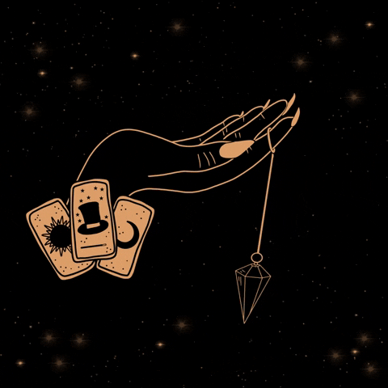
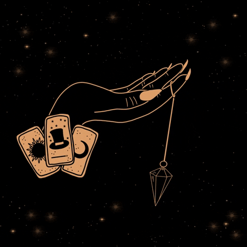
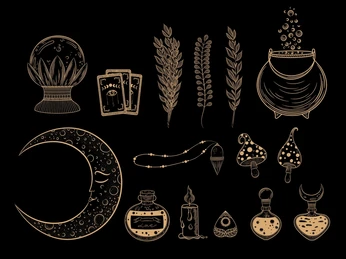

How to de-gnome the garden properly
This was normally accomplished by physically picking up the gnomes and expelling them from the garden in question. Newton Scamander recommended in Fantastic Beasts and Where to Find Them that swinging the gnome around one's head until dizzy and then dropping it over the garden wall was sufficient...
Mrs Skower's All-Purpose Magical Mess Remover was a magical cleaning solution invented some time after 1492...
Mrs Skower's All-Purpose Magical Mess Remover
Murtlap Essence - a must-have in the house
Murtlap Essence is a solution of strained and pickled tentacles of Murtlaps. It sooths painful cuts and abrasions, and helps them to heal...